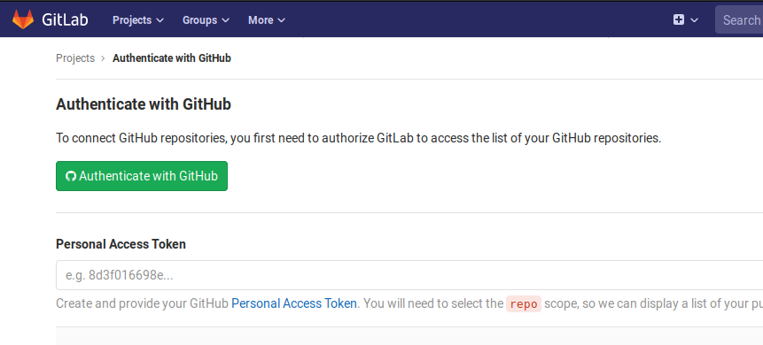
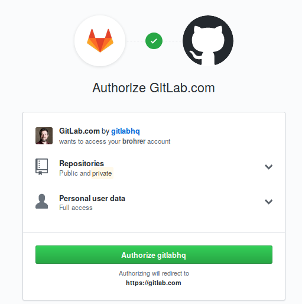
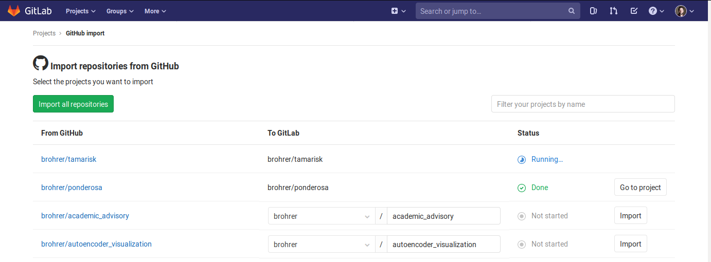
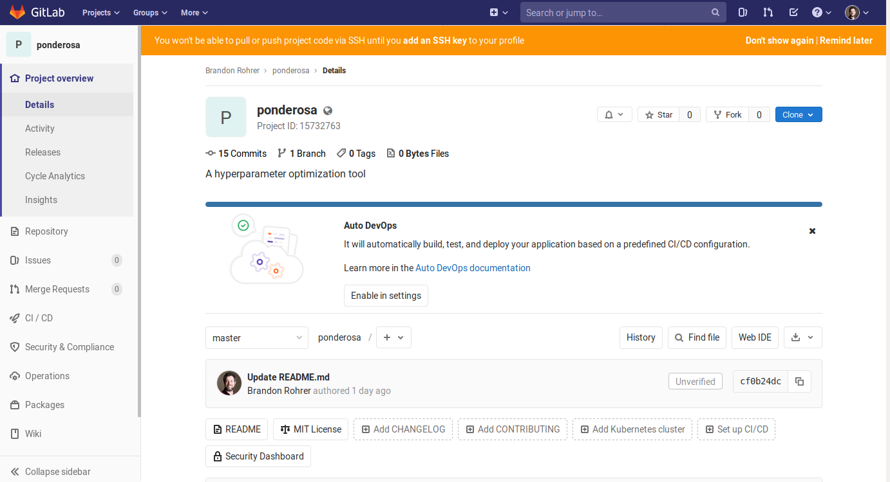

GitLab is a place to host your public and private code repositories. For everything I need in managing small side projects, it's nearly identical to GitHub but with a fox instead of a cat-octopus hybrid for a mascot. If you want a one-stop shop for enterprise-scale project management, GitLab has a pretty comprehensive set of features for that too with a new set of features rolling out each month on the 22nd. One area where GitLab soundly beats GitHub is in the flexibility of importing and exporting projects.
Migrate a project to GitLab
The process for signing up and creating a project (what GitHub calls a repository) is pretty self explanatory. If you decide to migrate a repository from your GitHub account to GitLab, there are just a few steps to take.
-
Start creating a new project and select the "Import Project" tab. Choose the GitHub option.

-
You'll be asked authenticate and authorize the request.


-
The import dialog lets you conveniently choose one, several, or all of your GitHub repositories to import.

-
And just like that the project is migrated to GitLab, ready to clone, fork, merge, star, and build into something amazing. (Make sure to add an ssh key if you want password-less interaction from your local machine.)

-
The last step is to set the new remote location any place you have cloned the repository. For example, if "brohrer" is your username and "ponderosa" is the name of the project, at the command line run
git remote set-url origin git@gitlab.com:brohrer/ponderosa.gitor
git remote set-url origin https://gitlab.com/brohrer/ponderosa.gitdepending on whether you are using
sshorhttpto talk with it.
That's all there is to it.